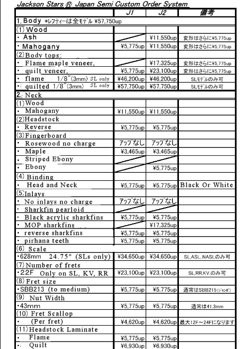
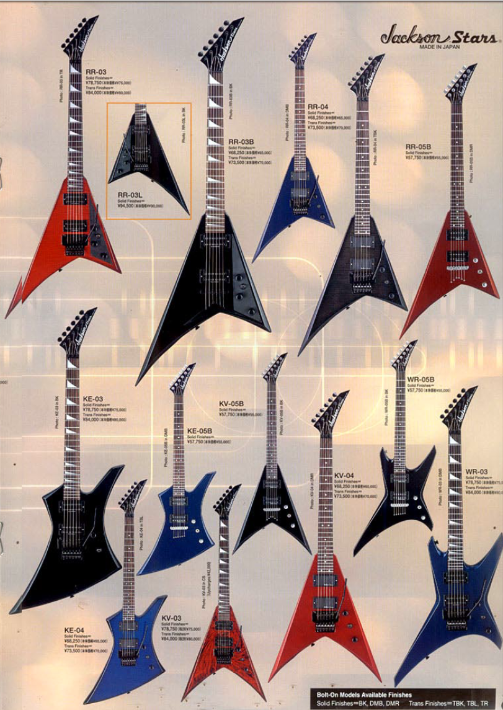
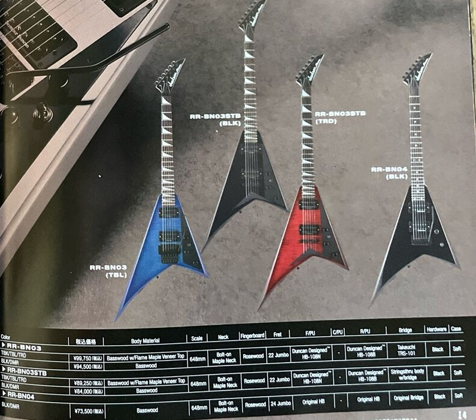
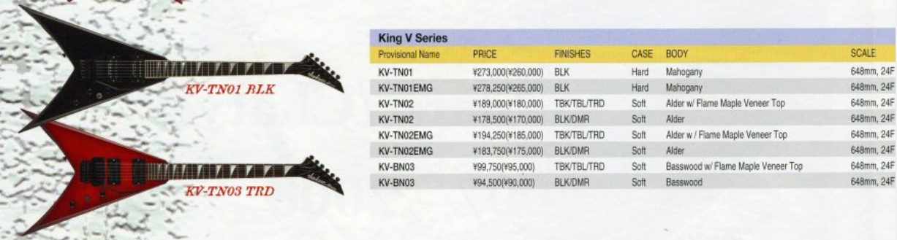

-Database #4- Jacksons Stars
-Database #4 Jackson Stars-
Database #1: Main
Click here for Database #2: Additional Jackson models
Click here for Database #3: Grover Jackson and related
CHARVEL DATABASE ON THIS PAGE.
***More information on Jacksons and Charvels, how to decipher model names, list of non-guitar Charvel and Jackson products, reference materials, and links***
- Jackson Stars USA
- Jackson Stars MIJ '02
- Jackson Stars MIJ '04,'05 and Signature
- Jackson Stars MIJ '07,'08
- Misc
Jackson Stars USA:
1996-99(?) USA Jackson but sold under Jackson Stars. Being such they also have US graphic options for finishes: Lightning sky, black and white dragon, eerie dess, snakeskin, skulls, flames, sunset, standing woman, multi colored dragon, spheres, coral sea, turquoise stone. Of note is that although these are from mid to late 90s they feature ‘old school’ USA specs for Jacksons, such as poplar bodies over alder, Schaller tremolos over Original Floyd Roses, and a few downgrades at least ostensibly, like rosewood fretboards over ebony. To make up for that however, we can see a few guitar designs here that would later be implemented in the worldwide market versions, particularly with the Soloists and Dinkys below. All came with hard cases.
- Jackson Stars U.S. RR-I: A RR1 for the Japanese domestic market with a tweak or two. Poplar body, maple neck (neck-thru), bound rosewood fretboard with sharkfin inlays. Seymour Duncan SH-4/ TB-5 HH pickups. Schaller tremolo. 2 vol, 1 tone, three-way toggle. Finishes: black, snow white
- Jackson Stars U.S. SL-I/ SSH: A Jackson Stars SL1. Poplar body, maple neck (neck-thru), bound rosewood fretboard with sharkfin inlays. 24 frets. Schaller tremolo. Seymour Duncan STK-S1n/ STK-S1n/ TB-5 HSS pickups. Vol, tone, five-way switch. Black hardware. Finishes: black, dark metallic blue, deep metallic red
- Jackson Stars U.S. SL-I/ HH: A Jackson Stars version of the Jackson SL2H except predating it slightly and if I’m not getting ahead of myself possibly the first two humbucker (not counting customs) Soloist to appear in catalogs. Same specs as above but with Seymour Duncan SH-4/ TB-5 HH pickups. Finishes: black, dark metallic blue, deep metallic red
- Jackson Stars U.S. DK-I/ SSH: Jackson Stars DK1 and in fact what would become the more modern DK1 with a tweak or two. (Remember that the earliest USA market ‘DK1’ is a different guitar. See its entry for clarification.) Poplar body, maple neck, bound rosewood fretboard with sharkfin inlay. Seymour Duncan STK-S1n/ STK-S1n/ TB-5 HSS pickups. Schaller tremolo. Vol, tone, five-way switch. Black hardware. Finishes: black, dark metallic blue, deep metallic red, PT (platinum?)
- Jackson Stars U.S. DK-I/ HH: Jackson Stars DK that calls to mind the later USA Select DK1 with its two humbucker configuration. Poplar body, maple neck, bound rosewood fretboard with sharkfin inlay. Seymour Duncan SH-4/ TB-5 HH pickups. Vol, tone, three-way toggle. Schaller tremolo. Black hardware. Finishes: black, dark metallic blue, deep metallic red, PT (platinum?)
MIJ Jackson Stars
Jackson Stars 2002 (mostly): All neck-thru unless noted
Soloists: w/ DX Softcase unless noted
- J.I SL/E-265SSH: Japan Identity. Ash body with 5A maple top. Maple neck, bound ebony fretboard with MOP sharkfin inlays. 24 frets. EMG SA/SA/81 HSS pickups. Org. Floyd Rose tremolo. Vol, tone, five-way switch. Black hardware. OHCS case. Finishes: Supreme blue, supreme purple, supreme green

- J.I SL/E-250HH: (Borrowed image) Japan Identity. EMG 81/81 version of above. Vol, tone, three-way toggle. Finishes: Supreme blue, supreme purple, supreme green
- J.P SL/E-215HH: Japan Pride. Ash body with 5A maple top. Maple neck, bound striped ebony fretboard and MOP sharkfin inlays. 24 frets. EMG 81/81 pickups. Org. Floyd Rose tremolo. Vol, tone, three-way toggle. Black hardware. OHCS case.Finishes: black, trans black, trans blue, trans red
- J.P SL/E-175SSH: Japan Pride. Ash body with 5A maple top. Maple neck, bound striped ebony fretboard with MOP sharkfin inlays. 24 frets. Seymour Duncan Custom/STK/STK HSS pickups. Schaller JT-590 tremolo. Vol, tone, five-way switch. Gold hardware. Finish matches headstock. Finishes: black, trans black, trans blue, trans red
- J.S.SLE-150: Japan Spirit. Poplar body. Maple neck, rosewood fretboard with MOP sharkfin inlays. EMG 81/81 HH pickups. Schaller JT-590 tremolo. Vol, tone, three-way toggle. Black hardware. Finishes: black, dark metallic blue, dark metallic red, silver sparkle
- J.S.SL-EH-145HH: Japan Spirit with passive EMG. Poplar body. Maple neck bound rosewood fretboard with MOP piranha inlays. EMG HZ H3/HZ H3 HH pickups with EMG AB boost. Schaller JT-590 tremolo. Vol, tone, boost, JE-0005 switch. Black hardware. Finishes: back, dark metallic blue, dark metallic red
- J.S.SL-138SSH: Japan Spirit. Poplar body. Maple neck with bound rosewood fretboard. MOP sharkfin inlays. 24 frets. Seymour Duncan Custom/STK/STK HSS pickups. Schaller JT-590 tremolo. Vol, tone, five-way switch. Finishes: black, dark metallic blue, dark metallic red, silver sparkle
- J.S.SL-128HH: Japan Spirit. Poplar body. Maple neck, bound rosewood fretboard with MOTO sharkfin inlays. Seymour Duncan Seymour Duncan Custom/JB HH pickups. Schaller JT-590 tremolo. Vol, tone, three-way toggle. Black hardware. Finishes: black, dark metallic blue, dark metallic red, silver sparkle
- J.S.B.SL-E-132HH: Japan Spirit- TOM. Poplar body, maple neck, bound rosewood fretboard with MOTO sharkfin inlays. EMG 81/81 HH pickups. TOM bridge, string-thru body. Vol, tone, three-way toggle. Black hardware. Finishes: black, dark metallic blue, dark metallic red
- J.S.SL-110HH: Japan Spirit- TOM. Poplar body, maple neck with bound rosewood fretboard and MOTO sharkfin inlays. Seymour Duncan JB/Custom HH pickups. TOM bridge string-thru body. Vol, tone, three-way toggle. Black hardware. Finishes: black, dark metallic blue, dark metallic red
- J.A.SL-105SSH: Japan Aim. Poplar body, rosewood fretboard with MOTO sharkfin inlays. Jackson J-100/J-100/ Duncan TB-5 HSS pickups. Takeuchi JT-580LP tremolo. Vol, tone, five-way switch. Black hardware. Finishes: black, dark metallic blue, dark metallic red
- J.A.SL-100HH: Japan Aim. Same as above but with Jackson J-50/ Duncan TB-5 HH pickups option. Vol, tone, three-way toggle.
- SL-C.U.95SSH: GJ C.U. Poplar body with 5A maple top. Rosewood fretboard with MOTO sharkfin inlays. Duncan Design SC-101/Sc-101/HB-102 HSS pickups. Takeuchi JT-580LP tremolo. Vol, tone, five-way switch. Satin chrome hardware. Finishes: trans amber, trans blue, trans red, trans black
- SL-C.U.90HH: GJ C.U. HH pickup option of above. Duncan Design HB-103/HB-103. Vol, tone, three-way toggle.
- SL-C.U.90SSH GJ C.U. Poplar body, rosewood fretboard with MOTO sharkfin inlays. Duncan Design SC-101x2/HB-102 HSS pickups. Takeuchi JT-580LP tremolo. VOl, tone, five-way switch. Satin chrome hardware. Finishes: black, metallic dark red, metallic blue, pewter
- SL-C.U.85HH: GJ C.U. Same as above but with HH option. Duncan Design HB-103/HB-103. Vol, tone, three-way toggle.
- SLA.M.F.T-95SSH: GJ M.F.T. Ash body. Rosewood fretboard with MOTO sharkfin inlays. Grover Jackson J-100/J-100/J-90C HSS pickups. Takeuchi JT-580LP tremolo. Vol, tone, five-way switch. Black hardware. Finishes: natural, violin brown burst, deep blue, trans red
- SLA.M.F.T-90HH: GJ M.F.T. HH pickup option of above. Grover Jackson J-50BC/J-90C. Vol, tone, three-way toggle.
- SL.M.F.T-85SSH: GJ M.F.T. Poplar body. Rosewood fretboard with MOTO sharkfin inlays. Grover Jackson J-100/J-100/J-90C HSS pickups. Takeuchi J-580LP tremolo. Vol, tone, five-way switch. Black hardware. Finishes: black, deep candy blue, deep candy red
- SL.M.F.T-80HH: GJ M.F.T. HH pickup option of above. Grover Jackson J-50BC/J-90C. Vol, tone, three-way toggle.
Archtop Soloist: w/ DX Softcase
- J.S.ASL-EH-150HH: Japan Spirit. Poplar body, bound rosewood fretboard with MOTO piranha inlays. EMG HZ H3/ H3 pickups with EMG AB boost. Schaller JT-590 tremolo. Vol, tone, three-way toggle, boost switch. Black hardware. Finishes: dark metallic blue, dark metallic red, black
- J.S.ASL-138: Japan Spirit. Same as above but with Seymour Duncan JB/Custom HH pickups and no boost. Vol, tone, three-way toggle.
- ASL.A.M.F.T-90g: GJ M.F.T. Ash body, rosewood fretboard with MOTO sharkfin inlays. Grover Jackson J-50BC/J-90C HH pickups. TOM bridge sring-thru body. Vol, tone, three-way toggle. Gold hardware. Finishes: violin brown burst, deep blue, trans red
- ASL.M.F.T-80g GJ M.F.T. Same as above Poplar body and different finish options. Finishes: black, deep candy blue, deep candy red.
Dinky: w/ Softcase
- DK.L-66HH: Left handed Dinky. Poplar body, rosewood fretboard with MOTO sharkfin inlays. Grover Jackson J-50BC/J-90C HH pickups. Takeuchi JT-580LP tremolo. Vol, tone, three-way toggle. Black hardware. Finishes: black, dark metallic red, dark metallic blue, metallic black
Double-cut Soloist/ NASL: w/ DX softcase case
- NASL-160: Japan Spirit. Mahogany body with 5A maple top. Bound rosewood fretboard with MOTO inlays. 24 frets. Seymour Duncan JB/Custom HH pickups. Schaller JT-590 tremolo. Vol, tone, three-way toggle. Gold hardware. With DX SCS case. Finishes: amber burst, antique cherry burst, violin brown burst
- NASL-145: Japan Spirit. Same as above but with TOM string-thru body bridge. Identical otherwise.
- NASL-110: Japan Spirit. Mahogany body with 5A maple top. Rosewood fretboard with MOTO inlays. 24 frets. Grover Jackson J-50/ Seymour Duncan TB-5 HH pickups. TOM string-thru body bridge. Vol, tone, three-way toggle. Chrome hardware. Finishes: trans blue, trans red, trans black
- NASL-75: Japan Spirit. Poplar body, rosewood fretboard with MOTO inlays. 24 frets. Duncan Design HB-103/HB-103 HH pickups. TOM string-thru body bridge. Vol, tone, three-way toggle. Chrome hardware. Finishes: black, dark metallic blue, dark metallic red.
Stealth: w/ DX softcase
- SB.STL-125: Super Bolt-On series. Ash body with 5A maple top. Bound striped ebony fretboard with MOP sharkfin inlays. 24 frets. Seymour Duncan JB/Custom HH pickups. Schaller JT-590 tremolo. Black hardware. Vol, tone, jE-0005 switch. With DX SCS case. Finishes: natural, pearl trans blue, trans red, trans black, candy blue, dark metallic red, pearl white
- SB.B.STL-105:Super Bolt-On series. Same as above but with TOM string-thru body option.
Warrior: w/ DX softcase
- J.S.WR-EH-150: Japan Spirit. Think WRMG (early version). Poplar body, bound rosewood fretboard with MOTO piranha inlays. EMG HZ H3/H3 pickups with EMG AB Boost. Schaller JT-590 tremolo. Vol, tone, three-way toggle, boost. Black hardware. Finishes: black, dark metallic red, dark metallic blue
- J.S.WR-138: Japan Spirit. Same as above but with Seymour Duncan JB/Custom pickups.
Rhoads: w/ DX SCS unless noted
- J.P.RRE-230: Japan Pride. Ash body with 5A maple top. Bound striped ebony fretboard with MOTO sharkfin inlays. 24 frets. EMG 81/81 HH pickups. Org. Floyd Rose tremolo. Vol, vol, tone, three-way toggle. Black hardware. With OHCS. Headstock matches finish. Finishes: trans red, trans black, other?
- J.P.RRE-220: Japan Pride. TOM version of above. Identical otherwise.
- J.P.RR-185: Japan Pride. Ash body with 5A maple top. Bound striped ebony fretboard with MOTO sharkfin inlays. 24 frets. Seymour Duncan JB/Custom HH pickups. Schaller JT-590 tremolo. Vol, vol, tone, three-way toggle. Gold hardware. With OHCS. Finishes: trans red, trans black, trans blue, black
- J.P.RR-175: Japan Pride. TOM version of above. Same otherwise.
- J.S.RRE-160: Japan Spirit. Poplar body, bound rosewood fretboard with MOTO sharkfin inlays. 24 frets. EMG 81/81 HH pickups. Schaller JT-590 tremolo. Vol, vol, tone, three-way toggle. Black hardware. Finishes: dark metallic blue, dark metallic red, black, silver sparkle
- J.S.RR-EH-150: Japan Spirit. Poplar body, bound rosewood fretboard with MOTO piranha inlays. 24 frets. EMG HZ H3/H3 pickups with EMG AB Boost. Vol, vol, tone, three-way toggle, boost switch. Black hardware. Finishes: dark metallic blue, dark metallic red, black
- J.S.RR-138: Japan Spirit. Poplar body, bound rosewood fretboard with MOTO sharkfin inlays. Seymour Duncan JB/Custom HH pickups. Schaller JT-590 tremolo. Vol, vol, tone, three-way toggle. Black hardware. Finishes: dark metallic blue, dark metallic red, black, silver sparkle
- J.S.B.RR-E-142: Japan Spirit- TOM. Poplar body, bound rosewood fretboard with MOTO sharkfin inlays. 24 frets. EMG 81/81 HH pickups. TOM string-thru body bridge. Vol, vol, tone, three-way toggle. Black hardware. Finishes: dark metallic blue, dark metallic red, black
- J.S.B.RR-120: Japan Spirit- TOM. Passive version of above. Seymour Duncan JB/Custom pickups. Some otherwise.
- J.A.RR-105: Japan Aim. Poplar body, rosewood fretboard with MOTO sharkfin inlay. 24 frets. Grover Jackson J-50/Seymour DUncan TB-5 HH pickups. Takeuchi JT-580LP tremolo. Vol, vol, tone, three-way toggle. Black hardware. Finishes: dark metallic blue, dark metallic red, black
- SB.B.RR-110 Super Bolt-On series Rhoads. Bound ash body. Bound striped ebony fretboard with MOTO sharkfin inlays. 24 frets. Seymour Duncan JB/Custom HH pickups. TOM bridge. Vol, vol, three-way toggle. Black hardware. Finishes: natural, pearl trans blue, trans red, trans black, candy blue, dark metallic red, pearl white
- RR-C.U.95: GJ C.U. Poplar body with 5A maple top. Rosewood fretboard with MOTO inlays. 24 frets. Duncan Design HB-103/HB-103 HH pickups. Takeuchi JT-580LP tremolo. Vol, vol, tone, three-way toggle. Satin chrome hardware. Finishes: trans red, trans blue, trans black
- RR-C.U.90: Plain top version of above. Finishes: black, dark metallic blue, dark metallic red, pewter
- RR.M.F.T.-85: GJ M.F.T. Poplar body, rosewood fretboard with MOTO inlays. 24 frets. Grover Jackson J-50BC/J-90C HH pickups. Takeuchi JT-580Lp tremolo. Vol, vol, tone, three-way toggle. Black hardware. Finishes: black, deep candy blue, deep candy red
- RRB-85:* Rhoads bass. Poplar body, bound rosewood fretboard with MOTO sharkfin inlays. 24 frets. Grover Jackson DJ-20/DJ-150 PJ pickups. ?Bridge. Vol, EQ. Black hardware. With SCS case. Finishes: black, dark metallic red, dark metallic blue
- RR.L-72: Lefty Rhoads. Poplar body, rosewood fretboard with MOTO sharkfin inlays. 24 frets. Grover Jackson J-50BC/J-90C HH pickups. Takeuchi JT-580LP tremolo. Black hardware. Vol, tone, three-way toggle. With SCS case. Finishes: black, dark metallic red, dark metallic blue, metallic black
Kelly: w/ DX softcase unless noted
- J.P.KE-E-230: Japan Pride. Ash body with 5A maple top. Bound striped ebony fretboard with MTO sharkfin inlays. EMG 81/81 pickups. Org. Floyd Rose. Vol, tone, three-way toggle. Black hardware. With OHCS. Finishes: trans red, trans black, black, other?
- J.P.KE-185: Japan Pride. Same except Schaller JT-590 and Seymour Duncan JB/Custom. Gold hardware.
- J.S.KEE-160 Japan Spirit. Poplar body, bound rosewood fretboard with MOTO sharkfin inlays. EMG 81/81 HH pickups. Schaller JT-590 tremolo. Vol, tone, three-way. Black hardware. Finishes: black, dark metallic red, dark metallic blue, metallic black?
- J.S.KE-EH-150: Japan Spirit. Poplar body, bound rosewood fretboard with MOTO piranha inlays. EMG HZ H3/H3 HH pickups and EMG AB boost. Schaller JT-590 tremolo. Vol, tone, three-way toggle. Black hardware. Finishes: black, dark metallic red, dark metallic blue, metallic black?
- J.S.KE-138: Japan Spirit. Poplar body, bound rosewood fretboard with MOTO sharkfin inlays. Seymour Duncan JB/Custom HH pickups. Schaller JT-590 tremolo. Vol, tone, three-way. Black hardware. Finishes: black, dark metallic red, dark metallic blue, metallic black?
- J.S.B.KEE-142: Japan Spirit- TOM. Poplar body, bound rosewood fretboard with MOTO sharkfin inlays. EMG 81/81 HH pickups. TOM string-thru body bridge. Vol, tone, three-way. Black hardware. Finishes: black, dark metallic red, dark metallic blue
- J.S.B.KE-120: Japan Spirit- TOM. Like above but with Seymour Duncan JB/Custom HH pickups.
- J.A.KE-105 Japan Aim. Poplar body, rosewood fretboard with MOTO sharkfin inlays. Grover Jackson J-50/ Seymour Duncan TB-5 HH pickups. Takeuchi JT-580LP tremolo. Vol, tone, three-way toggle. Black hardware. Finishes: black, dark metallic blue, dark metallic red
- SB.KE-130: Super Bolt-on series. Bound ash body. Bound striped ebony fretboard with MOTO sharkfin inlays. Seymour Duncan JB/Custom HH pickups. Schaller JT-590 tremolo. Vol, tone, three-way toggle. Black hardware. Finishes: Natural, pearl trans blue, trans red, trasn black, candy blue, dark metallic red, pearl white
- K.E.-C.U.95: GJ C.U. Poplar body with 5A maple top. Rosewood fretboard with MOTO inlays. Duncan Design HB-103/HB-103 HH pickups. Takeuchi JT-580LP tremolo. Vol, tone, three-way toggle. Satin chrome hardware. Finishes: trans red, trans blue, trans black
- K.E.-C.U.90: GJ C.U. Plain top version of above. Finishes: black, dark metallic blue, dark metallic red
- K.E.M.F.T.-85: GJ M.F.T. Poplar body, rosewood fretboard with MOTO inlays. Grover Jackson J-50BC/J-90C HH pickups. Takeuchi JT-580LP tremolo. Vol, tone, three-way toggle. Black hardware. Finishes: black, deep candy blue, deep candy red
- KEB-85:* Kelly bass. Poplar body, bound rosewood fretboard with MOTO sharkfin inlays. 24 frets. Grover Jackson DJ-20/DJ-150 PJ pickups. ?Bridge. Vol, EQ. Black hardware. With SCS case. Finishes: black, dark metallic red, dark metallic blue
- KE.L-72: Lefty Kelly. Poplar body, rosewood fretboard with MOTO sharkfin inlays. Grover Jackson J-50BC/J-90C HH pickups. Takeuchi JT-580LP tremolo. Black hardware. Vol, tone, three-way toggle. With SCS case. Finishes: black, dark metallic red, dark metallic blue, metallic black
Kelly Star: with DX Softcase
- J.S.KS-EH-150: Japan Spirit. Poplar body, bound rosewood fretboard with MOTO piranha inlays. 24 frets. EMG HZ H3/H2 HH pickups with EMG AB boost. Schaller JT-590 tremolo. Vol, tone, three-way toggle, boost switch. Black hardware. Finishes: black, dark metallic red, dark metallic blue
- J.S.KS-138: Japan Spirit. Poplar body, bound rosewood fretboard with MOTO sharkfin inlays. 24 frets. Seymour Duncan JB/Custom HH pickups. Schaller JT-590 tremolo. Vol, tone, three-way toggle. Black hardware. Finishes: black, dark metallic red, dark metallic blue
- J.A.KS-105: Japan Aim. Poplar body, rosewood fretboard with MOTO sharkfin inlays. Grover Jackson J-50/ Seymour Duncan TB-5 HH pickups. Takeuchi JT-580LP tremolo. Vol, tone, three-way toggle. Black hardware. Finishes: black, dark metallic red, dark metallic blue
- SB.KS-130: Super Bolt-on series. Bound ash body. Bound striped ebony fretboard with MOTO sharkfin inlays. Seymour Duncan JB/Custom HH pickups. Schaller JT-590 tremolo. Vol, tone, three-way toggle. Black hardware. Finishes: Natural, pearl trans blue, trans red, trans black, candy blue, dark metallic red, pearl white
- KS-C.U.95: GJ C.U. Poplar body with 5A maple top. Rosewood fretboard with MOTO inlays. Duncan Design HB-103/HB-103 HH pickups. Takeuchi JT-580LP tremolo. Vol, vol, tone, three-way toggle. Satin chrome hardware. Finishes: trans red, trans blue, trans black
- K.S.M.F.T.-85:GJ M.F.T. Poplar body, rosewood fretboard with MOTO sharkfin inlays. Grover Jackson J-50BC/J-90C HH pickups. Takeuchi JT-580LP tremolo. Vol, tone, three-way toggle. Black hardware. Finishes: black, deep candy blue, deep candy red
- KSB-85:* Kelly Star bass. Poplar body, bound rosewood fretboard with MOTO sharkfin inlays. 24 frets. Grover Jackson DJ-20/DJ-150 PJ pickups. ?Bridge. Vol, EQ. Black hardware. With SCS case. Finishes: black, dark metallic red, dark metallic blue
- KS.L-72:Lefty Kelly Star. Poplar body, rosewood fretboard with MOTO sharkfin inlays. Grover Jackson J-50BC/J-90C HH pickups. Takeuchi JT-580LP tremolo. Black hardware. Vol, tone, three-way toggle. With SCS case. Finishes: black, dark metallic red, dark metallic blue, metallic black
King V: w/ DX Softcase unless noted.
- J.P KV/E-230: Japan Pride. Ash body with 5A maple top. Bound striped ebony fretboard with MOTO sharkfin inlays. EMG 81/81 HH pickups. Org. Floyd Rose tremolo. Vol, vol, tone, three-way toggle. Black hardware. Finishes: cherry sunburst, trans blue, trans red, trans black, black
- J.P KV-185: Japan Pride. Ash body with 5A maple top. Bound striped ebony fretboard with MOTO sharkfin inlays. Seymour Duncan JB/Custom HH pickups. Schaller JT-590 tremolo. Vol, tone, three-way toggle. Gold hardware. Finishes: cherry sunburst, trans blue, trans red, trans black, black
- J.S.KVE-160: Japan Spirit. Poplar body, bound rosewood fretboard with MOTO sharkfin inlays. EMG 81/81 HH pickups. Schaller JT-590 tremolo. Vol, tone, three-way toggle. Black hardware. Finishes: black, dark metallic red, dark metallic blue, metallic black, sparkle silver
- J.S.KV-EH-150: Japan Spirit. Poplar body, bound rosewood fretboard with MOTO piranha inlays. EMG HZ H3/ H3 HH pickups with AB boost. Schaller JT-590 tremolo. Vol, tone, three-way toggle, boost. Black hardware. Finishes: black, dark metallic red, dark metallic blue, metallic black,
- J.S.KV-138: Japan Spirit. Poplar body, bound rosewood fretboard with MOTO sharkfin inlays. Seymour Duncan JB/Custom HH pickups. Schaller JT-590 tremolo. Vol, tone, three-way toggle. Black hardware. Finishes: black, dark metallic red, dark metallic blue, metallic black, sparkle silver
- J.A.KV-105: Japan Aim. Poplar body, rosewood fretboard with MOTO sharkfin inlays. Grover Jackson J-50/Seymour Duncan TB-5 HH pickups. Takeuchi JT-580LP tremolo. Vol, tone, three-way toggle. Black hardware. Finishes: black, dark metallic red, dark metallic blue,
- SB.KV-110: Super Bolt-on series. Bound ash body. Bound striped ebony fretboard with MOTO sharkfin inlays. Seymour Duncan JB/Custom HH pickups. TOM string-thru body bridge. Vol, vol, tone, three-way toggle. Black hardware. Finishes: natural, pearl trans blue, trans red, trans black, black, candy blue, dark metallic red, pearl white
- K.V.-C.U.95: GJ C.U. Poplar body with 5A maple top. Rosewood fretboard with MOTO inlays. Duncan Design HB-103/HB-103 HH pickups. Takeuchi JT-580LP tremolo. Vol, tone, three-way toggle. Satin chrome hardware. Finishes: trans red, trans blue, trans black, cherry sunburst
- K.V.-C.U.90: GJ C.U. Plain top version of above. Finishes: black, dark metallic red, dark metallic blue, pewter
- K.V.M.F.T.-85: GJ M.F.T. Poplar body, rosewood fretboard with MOTO sharkfin inlays. Grover Jackson J-50BC/J-90C HH pickups. Takeuchi JT-580LP tremolo. Vol, tone, three-way toggle. Black hardware. Finishes: black, deep candy blue, deep candy red
Jackson Stars 2004,05 (mostly) and Signatures: Continuing on with more interesting options. Watch for close variations.
Graphic finishes: Hot Rod Flames, Eerie Dess Swirl, Blood splatter, Stars, Rising Sun, Blue Orange Flames, Pile O’ Skulls, Lightning Sky, Crimson Swirl, Cobalt Blue Swirl, Snow White with Black Pinstripes (on RR, KE, KV, KS, WR), Rising Sun, Desert Camo (sig), Black with Red bevels (sig), Black w/ white polka dots (sig) STS (stars and stripes) Order form below:

Soloists
- Jackson Stars SL-J1: High end Soloist. Ash body with 5A flame maple veneer top. Maple neck (neck-thru), bound ebony with pearl sharkfin inlays. 24 frets. Pearl headstock logo. Seymour Duncan SH-1n, TB-5 HH pickups. Org. Floyd Rose tremolo. Vol, tone, three-way toggle. Black hardware. With hard case. Finishes: Trans Black Sunburst, Trans Snow white sunburst, trans red sunburst, Trans blue sunburst, black
- SL-J1E: Same as above with EMG 81/81 set.
- SL-J1K: Kahler 2320K with Schaller Locking nut option. Seymour Duncan pickups.
- SL-J1EK: Kahler with Schaller Locking nut option. EMG pickups.
- Jackson Stars SL-J2: Alder body, maple neck (neck-thru) bound ebony fretboard with sharkfin inlays. 24 frets. Seymour Duncan SH-1n/TB-5 HH pickups. Schaller tremolo. Black hardware. Vol, tone, three-way toggle. Finishes: black, dark metallic blue, deep metallic red, Pewter, Satin black, Graphical finishes
- SL-J2E: Same but with EMG 81/81 HH set.
- SL-J2L: Left-handed option with Seymour Duncan.
- SL-J2K: Kahler 2320K with Schaller Locking nut option. Seymour Duncan pickups.
- SL-J2EK: Kahler with Schaller Locking nut option. EMG pickups.
- SL-J2BE: EMG pickups and TOM string-thru body option.
- Jackson Stars SL-J2B: TOM Soloist. Alder body, maple neck (neck-thru) bound ebony fretboard with sharkfin inlays. 24 frets. Seymour Duncan SH-1n/TB-5 HH pickups. Gotoh TOM string thru body. Vol, tone, three-way toggle. Black hardware. Finishes: black, Dark Metallic Blue, Dark Metallic Red, Pewter, Satin black, Graphic finishes
- SL-J2BE: Same but with EMG 81/81 set.
- Jackson Stars SL-J3: 2002. Alder body, maple neck. Bound Rosewood fretboard with piranha inlays.24 frets. EMG H-3H pickups. EMG-AB gain control. Schaller tremolo. Vol, tone, three-way toggle. Black hardware. Headstock matches finish. Finishes: black, dark metallic blue, dark metallic red, PT, SBK, optional finishes including Hot Rod Flames
- Jackson Stars SLSMG-J: Light weight Soloist. Mahogany body and neck. Rosewood fretboard with piranha inlays. 24 frets. AT-1 headstock. EMG 81/81 HH pickups. TOM bridge string-thru body. Vol, tone, three-way toggle. Finishes: black, dark metallic red, satin black
- Jackson Stars ASL-J1: Arched top Soloist. Ash body with 5A quilt maple top and natural edge. Maple neck (neck-thru), bound ebony fretboard with pearl sharkfin inlays. Pearl logo. Seymour Duncan SH-1n/ TB-5 HH pickups. Org. Floyd Rose tremolo. Vol, tone, three-way toggle. Black hardware. With hard case. Finishes: trans black sunburst, Trans Snow white sunburst, trans red sunburst, Trans blue sunburst, black
- ASL-J1E: Same but with EMG 81/81 HH set.
- Jackson Stars ASL-J2: Arched alder body. Maple neck (neck-thru), bound ebony fretboard with sharkfin inlays. Seymour Duncan SH-1n/ TB-5 HH pickups. Schaller tremolo. Vol, tone, three-way toggle. Black hardware. Finishes: black, Dark Metallic Blue, Pewter, Satin black, Graphic finishes
- ASL-J2E: Same but with EMG(?) HH pickups.
Rhoads
- Jackson Stars RR-J1: High end Rhoads. Ash body with 5A flame maple veneer top. Maple neck (neck-thru), bound ebony fretboard with pearl sharkfin inlays 24 frets. Pearl logo. Seymour Duncan SH-1n/TB-5 HH pickups. Org. Floyd Rose tremolo. Vol, Vol, tone, three-way toggle. Black hardware. With hard case. Finishes: Trans Black Sunburst, Trans Snow white sunburst, trans red sunburst, black
- RR-J1E: Same as above with EMG 81/81 set.
- RR-J1K: Kahler with Schaller locking nut option and Seymour Duncan pickups.
- RR-J1EK: Kahler with Schaller locking nut and EMG pickups.
- Jackson RR-J1B: High end TOM option. Ash body with 5A flame maple veneer top. Maple neck (neck-thru), bound ebony fretboard with pearl sharkfin inlays 24 frets. Pearl logo. Seymour Duncan SH-1n/TB-5 HH pickups. Gotoh TOM bridge string-thru body. Vol, vol, tone, three-way toggle. With hardcase. Finishes: Trans Black Sunburst, Trans Snow white sunburst, trans red sunburst, Trans blue sunburst, black
- RR-J1BE: Same as above with EMG 81/81 set.
- Jackson Stars RR-J2: Alder body, maple neck (neck-thru), Bound striped ebony fretboard with sharkfin inlays. 24 frets. Seymour Duncan SH-1n/ TB-5 HH pickups. Schaller tremolo. Vol, vol, tone, three-way toggle. Headstock matches finish. Finishes: black, Dark Metallic Blue, Dark Metallic Red, Pewter, CBL, Satin black, Graphic finishes
- RR-J2E: Like above but with EMG 81/81 HH set.
- Jackson Stars RR-J2B: Neck-thru Rhoads. Alder body, maple neck (neck-thru), Bound striped ebony fretboard with sharkfin inlays. 24 frets. Seymour Duncan SH-1n/ TB-5 HH pickups. Gotoh TOM bridge string-thru body. Vol, vol, tone, three-way toggle. Headstock matches finish. Finishes: black, Dark Metallic Blue, Dark Metallic Red, Pewter, CBL, Graphic finishes
- RR-J2BE: Same as RR-J2B but with EMG HH pickups.
- RR-J2L: Left-handed of RR-J2.
- RR-J2K: Kahler with Schaller locking nut option and Seymour Duncan pickups.
- RR-J2EK: Kahler with Schaller locking nut option and EMG pickups.
NASL
- Jackson Stars NASL-J1: Unique double cut model. Arched mahogany body with 5A flame maple veneer top. Mahogany neck (neck-thru), multi-bound ebony fretboard with NASL pearl and abalone inlays. 24 frets. Pearl logo. Seymour Duncan SH-1n/TB-4 HH pickups. Schaller tremolo. Vol, tone, three-way toggle. Gold hardware. With hardcase. Headstock matches finish. Finishes: Antique Cherry Sunburst, Violin Brown Sunburst, trans red sunburst, Trans blue sunburst, Trans Black Sunburst, Black
- NASL-J1B: Gotoh TOM with stop bar. Seymour Duncan SH1-n/ SH-4 HH pickups. Otherwise same as above.
- Jackson Stars NASL-J2E: EMG equipped model. Arched mahogany body. Mahogany neck (neck-thru), bound rosewood with NASL inlays. EMG 81/81 HH pickups. Schaller tremolo. Vol, tone, three-way toggle. Black hardware. Finishes: black, Dark Metallic Blue, Pewter, Satin black, Graphic finishes
- NASL-J2BE: Same but with Gotoh TOM with stop bar.
Warrior
- Jackson Stars WR-J2: A Warrior. Alder body, maple neck (neck-thru), bound striped ebony fretboard with sharkfin inlays. Seymour Duncan SH-1n/TB-5 HH pickups. Schaller tremolo. Vol, tone, three-way toggle. Black hardware. Headstock matches finish. Finishes: black, Dark Metallic Blue, Dark Metallic Red, Pewter, Satin black, Graphics finishes
- WR-J2E: Same but with EMG 81/81 HH set.
- WR-J2K: Kahler with Schaller locking nut option and Seymour Duncan pickups.
- WR-J2EK: Kahler with Schaller locking nut option and EMG pickups.
King V
- Jackson Stars KV-J1: High end King V. Ash body with 5A flame maple veneer top. Maple neck (neck-thru), bound ebony fretboard with pearl sharkfin inlays. 24 frets. Pearl logo. Seymour Duncan SH-1n/TB-5 HH pickups. Org. Floyd Rose tremolo. Vol, vol, tone, three-way toggle. Black hardware. With hardcase. Finishes: Trans Black Sunburst, Trans Snow white sunburst, trans red sunburst, Trans blue sunburst, black
- KV-J1E:Same but with EMG 81/81 set.
- KV-J1K: Kahler with Schaller locking nut option and Seymour Duncan pickups.
- KV-J1EK: Kahler with Schaller locking nut option and EMG pickups.
- Jackson Stars KV-J2: Alder body, maple neck (neck-thru), bound striped ebony with sharkfin inlays. 24 frets. Schaller tremolo. Seymour Duncan SH-1n/TB-5 HH pickups. Vol, tone, three-way toggle. Black hardware. Headstock matches finish. Finishes: black, Dark Metallic Blue, Dark Metallic Red, Pewter, Satin black, Graphic finishes
- KV-J2E: Same but with EMG 81/81 HH set.
- KV-J2K: Kahler with Schaller locking nut option and Seymour Duncan pickups.
- KV-J2EK: Kahler with Schaller locking nut option and EMG pickups.
Kelly and Kelly Star
- Jackson Stars KS-J2: A Kelly Star. Alder body, maple neck (neck-thru), bound striped ebony fretboard with sharkfin inlays. 24 frets. Seymour Duncan SH-1n/TB-5 HH pickups. Vol, tone, three-way toggle. Black hardware. Finishes: black, Dark Metallic Blue, Dark Metallic Red, Pewter, Satin black
- KS-J2E: Same but with EMG 81/81 HH set.
- Jackson Stars KE-J1: High end Kelly. Ash body with 5A flame maple veneer top. Maple neck (neck-thru), bound ebony fretboard with pearl sharkfin inlays. 24 frets. Pearl logo. Seymour Duncan SH-1n/TB-5 HH pickups. Org. Floyd Rose tremolo. Vol, tone, three-way toggle. With hardcase. Finishes: Trans Black Sunburst, Trans Snow white sunburst, trans red sunburst, Trans blue sunburst, black
- KE-J1E: Same but with EMG 81/81 set.
- KE-J1K: Kahler with Schaller locking nut option and Seymour Duncan pickups.
- KE-J1EK: Kahler with Schaller locking nut option and EMG pickups.
- Jackson Stars KE-J2: Alder body, maple neck (neck-thru), bound striped ebony fretboard with sharkfin inlays. 24 frets. Seymour Duncan SH-1n/TB-5 HH pickups. Schaller tremolo. Vol, tone, three-way toggle. Black hardware. Finishes: black, Dark Metallic Blue, Pewter, Satin black, Graphic finishes
- KE-J2E: Same but with EMG 81/81 set.
- KE-J2K: Kahler with Schaller locking nut option and Seymour Duncan pickups.
- KE-J2EK: Kahler with Schaller locking nut option and EMG pickups.
Bolt-on series: Dinky, Rhoads, Kelly, Concert Basses
Finishes: Black, dark metallic blue, dark metallic red, trans black, trans blue, trans red
- Jackson Stars DK-01: Dinky, not unlike DXMG. Alder body. Maple neck, rosewood fretboard with sharkfin inlays. 24 frets. EMG H3/H3 HH pickups. Takeuchi TRS-101 tremolo. Vol, tone, three-way switch. Black hardware. Finishes: black, dark metallic red, dark metallic blue
- Jackson Stars DK-705: Dinky, not unlike DK2. Basswood body with flame maple veneer top option. Maple neck, bound rosewood fretboard with sharkfin inlays. 24 frets. Duncan Designed SC-101x2, HB-102B HSS pickups. Vol, tone, five-way switch. Takeuchi TRS-101 tremolo. Black hardware. Finishes: black, Dark Metallic Blue, Dark Metallic Red, trans black, trans red, trans blue, Graphic finishes
- DK-02: Seems to be a later version of above in 2005 catalog. Alder body, otherwise same. Finishes: black, dark metallic blue, dark metallic red, trans black, trans red, trans blue
- Jackson Stars DK-900: Same but with fire inlay, not unlike the DK2FF. Finishes: black, Dark Metallic Blue, Dark Metallic Red, Graphic finishes
- Jackson Stars DK-605: HH Dinky. Basswood body with flame maple veneer top option. Maple neck, rosewood fretboard with sharkfin inlays. 24 frets. Duncan Designed HB-103/HB-103B HH pickups. Takeuchi TRS-101 tremolo. Vol, tone, three-way lever. Black hardware. Finishes: black, Dark Metallic Blue, DRR, Trans black, trans red, trans blue, Graphic finishes
- DK-03: From 2005 catalog. Seems to be the same as DK-605.
- DK-03L: Left-handed version.
- Jackson Stars DK-04: Seems to be a more budget Dinky. Alder body. Maple neck, rosewood fretboard with dots. Jackson HH pickups. Takeuchi TRS-101 tremolo. Vol, tone, three-way switch. Black hardware. Finishes: dark metallic red, black, trans black, trans blue, trans red
- Jackson Stars DK-05B: Alder body. Maple neck, rosewood fretboard with dots. 24 frets. Jackson HH pickups. TOM string-thru body. Vol, tone, three-way switch. Chrome hardware. Two humbuckers. Finishes: dark metallic blue, black, dark metallic red
- Jackson Stars ADK-905: Archtop reverse headstock Dinky, not unlike DKMG (old version). Arched basswood body. Maple neck, bound rosewood fretboard with piranha inlays. 24 frets. EMG H3/H3 HH pickups. Takeuchi TRS-101 tremolo. Vol, tone, EMG gain, three-way lever. Reverse headstock. Black hardware. Finishes: black, Dark Metallic Blue, Dark Metallic Red, trans black, trans red, trans blue, Graphic finishes
- ADK-01: Seems to be a rename of above from 2005 catalog.
- Jackson Stars ADK-100B: Same but with Fire inlay and TOM sting-thru body bridge, not unlike DKMGTFF. Finishes: black, Dark Metallic Blue, Dark Metallic Red, Graphic finishes
- ADK-01B: Seems to be a rename of above from 2005 catalog.
- Jackson Stars RR-750: Mid range Rhoads. Basswood body with option flame maple veneer top. Maple bolt-on neck, Rosewood fretboard with sharkfin inlays. 22 frets. Duncan Design HB-108N/HB-108B HH pickups. Takeuchi TRS-101 tremolo. Vol, vol, tone, three-way toggle. Black hardware. Finishes: black, Dark Metallic Blue, Dark Metallic Red, trans black, trans red, trans blue, Graphic finishes

- RR-03: Rename of above from 2005 catalog?
- RR-03L: Left-handed option.
- Jackson Stars RR-550B: Same but with Duncan Design HB103 pickup set and TOM string-thru body bridge. Finishes: black, Dark Metallic Blue, Dark Metallic Red, Graphic finishes
- RR-03: Rename of above from 2005 catalog?
- Jackson Stars RR-04: More budget Rhoads. Maple neck, rosewood fretboard with dots. Jackson pickups. Takeuchi tremolo. Vol, tone, three-way toggle. (No pickguard). Black hardware. Finishes: Dark metallic blue, more.. Note: May be called RR-605. They seem to be the same thing renamed or a misnomer by sellers
- Jackson Stars RR-05B: Like above but with TOM string-thru body bridge. Chrome hardware.
- Jackson Stars KE-705: Midrange Kelly. Basswood body with optional flame maple veneer top. Maple bolt-on neck. Rosewood fretboard with sharkfin inlays. 24 frets. Duncan Design HB-108N/HB-108B HH set. Takeuchi TRS-101 tremolo. Vol, three-way toggle. Black hardware. Finishes: black, Dark Metallic Blue, Dark Metallic Red, trans black, trans red, trans blue, Graphic finishes
- KE-03: Rename of above from 2005 catalog?
- Jackson Stars KE-04*: Like above but with dot inlays and covered Jackson pickups. Vol, tone, three-way toggle. Finishes: dark metallic blue
- Jackson Stars KV-705: Midrange King V. Basswood body with optional flame maple veneer top. Maple bolt-on neck. Rosewood fretboard with sharkfin inlays. 24 frets. Duncan Design HB-108N/HB-108B HH set. Takeuchi TRS-101 tremolo. Vol, tone, three-way toggle. Black hardware. Finishes: black, Dark Metallic Blue, Dark Metallic Red, trans black, trans blue, trans red, Graphic finishes
- KV-03: Rename of above from 2005 catalog?
- Jackson Stars KV-04*: Like above but with dots. Rosewood fretboard with dot inlays. Covered Jackson pickups. Takeuchi tremolo. Vol, tone, three-way toggle.
- Jackson Stars KV-05*: TOM option of above. Chrome hardware.
- Jackson Stars KEB-750: Kelly Bass, not unlike the KBX. Alder body, maple bolt-on neck, rosewood fretboard with sharkfin inlays. Duncan Design SB102x2 soapbar pickups. Duncan Design BEQ3 preamp. ‘Convertible’ bridge. Black hardware. Vol, blend, bass, mid, treble, slap switch. Finishes: black, Dark Metallic Blue, Dark Metallic Red, Graphic finishes
- Jackson Stars KEB-02: Seems to be a rename of above from 2005 catalog.
- Jackson Stars CB-01: A Jackson CMG Concert bass. Alder body. Maple neck, bound rosewood fretboard with sharkfin inlays. 22 frets. EMG-HZ 35x2 soapbar pickups. Duncan Design BEQ3 preamp. JB340 bridge. Black hardware. Vol, blend, treble, mid, bass, slap. Finishes: black, dark metallic red, dark metallic blue
- Jackson Stars WR-03*: A bolt-on Warrior. (?) body, rosewood fretboard with sharkfin inlays. 24 frets. Duncan Design? HH pickups. Takeuchi tremolo. Vol, tone, three-way toggle. Black hardware. Finishes: dark metallic blue
- Jackson Stars WR-05B*: More budget Warrior. Rosewood fretboard with dots. 24 frets. TOM string-thru body bridge. Vol, tone, three-way toggle. Chrome hardware. Finishes: black
Signature artist Jackson Stars
- Jackson Stars Kevin Bond Rhoads: Mahogany body and neck (neck-thru), bound ebony fretboard with Superjoint pentagram inlay. Seymour Duncan SH-T1b single humbucker. TOM bridge with Schaller tailpiece. One volume. Black hardware. Finishes: black with blood red bevel, black with neon green bevel
- Jackson Stars Christian Olde Wolbers Dinky 6 string: Arched mahogany body, bolt-on mahogany neck with ebony fretboard (no inlays). 24 frets. EMG 81 single humbucker. TOM string-thru body. Single volume. Black hardware. Finishes: black, desert camo
- Jackson Stars Christian Olde Wolbers Dinky 7 string: Seven string version of above. EMG-707 single humbucker. Finishes: black, desert camo
- Jackson Stars Chris Beattie C20 Concert Bass: Alder body. Maple bolt-on neck, rosewood fretboard with maces inlays. 24 frets. EMG-35HZx2 soapbar pickups. EMG BEQ preamp. Vol, blend, eq. JB340 bridge. Finishes: black, satin black
Jackson Stars 2007-08: Includes some limited editions. Note that the model name can be reused for different models.
Jackson SL Series: Soloists

- Jackson Stars SL-TN01/EMG: A soloist. Mahogany body with optional flame maple top. Maple neck. Seymour Duncan SH-1/TB-4 or EMG 81/81 HH pickups. Bound ebony fretboard with pearl sharkfin inlays. 24 frets. Floyd Rose tremolo. Vol, tone, three-way toggle. CTS pots (non-EMG), Swcraft(?) switch. Black hardware. With hardcase. Finishes: trans black, trans blue, black, trans red, Limited 2008 colors: white, trans amber, trans red with gold hardware.
- Jackson Stars SL-TN02/EMG: Alder body Soloist with optional flame maple veneer top. Maple neck. Bound striped ebony fretboard with sharkfin inlays. Seymour Duncan SH-1/TB-4 or EMG 81/81 HH pickups. Floyd Rose FRT-0 2000 tremolo. Vol, tone, three-way toggle. Black hardware. Finishes: trans black, trans blue, black, trans red, black, dark metallic red
- SL-TN02STB/EMG: TOM string-thru body version of above with Seymour Duncan or EMG 81s. Same otherwise. Finishes: black
- Jackson Stars SL-TN03*: Limited model. Single emg. Rosewood fretboard with piranha inlays. Reverse headstock. (Known) finishes: black
- Jackson Stars SL-TN01 Quilt: Limited 2008 model. Same as SL-TN01 non EMG version but with gold hardware and quilt top on Mahogany body. Reverse headstock. Finishes: natural, trans amber, trans black, trans blue, trans red

- Jackson Stars ASL-TN01*: Limited model. Seems to have a flame top, arch-top body. ? fretboard with sharkfin inlays. Other specs seem to be the same as TN01. (Known) finishes: trans blue
Dinky Series: All dual humbuckers and 24 frets.
- Jackson Stars DK-BN2007: Mahogany body (optional flame top), maple neck. Bound ebony fretboard with pear sharkfin inlays. Seymour Duncan SH-1/TB-4 HH pickups. Floyd Rose Org. 1 vol, tone, three-way switch. CTS pots (non-EMG), 'Swcraft' switch. Black hardware. With hardcase. Finishes: trans black, trans blue, trans red, black
- Jackson Stars DK-BN01: Alder body. Maple neck, bound rosewood with sharkfin inlays. EMG H-4x2 HH pickups. Takeuchi TRS-101 tremolo. Vol, tone, three-way lever. B.O.M.N.R Head. Black hardware. Finishes: Black, dark metallic red
- DK-BN02: Same as above with bound maple fretboard and black sharkfins, not unlike the Pro Series DK2M (old version). EMG H4x2 pickups. Black hardware. Finishes: Black, snow white
- Jackson Stars DK-BN03: Basswood body with flame maple veneer top. Maple neck. Rosewood fretboard with sharkfin inlays. Duncan Designed HB-103N/HB-103B HH pickups. Takeuchi TRS-101 tremolo. Vol, tone, three-way switch. Black hardware. Finishes: trans black, trans blue, trans red, black, deep metallic red
- Jackson Stars DK-BN04: More Budget option. Basswood body, maple neck, rosewood fretboard with dots. 24 frets. Jackson humbuckersx2. Fulcrum bridge. Vol, tone, three-way lever. Black hardware. Finishes: black, dark metallic red
- Jackson Stars ADK-BN01*: Limited model. Seems to have a flame top, arch-top body. Rosewood fretboard with piranha inlays and reverse headstock, ala DKMG. Floyd rose? Three knobs so I assume afterburner and EMG HZ? Chrome hardware. (Known)finishes: Trans blue
- Jackson Stars DK-BN2007*: Amber version of BN2007?
RR Series
- Jackson Stars RR-TN01/EMG: Higher end Rhoads. Mahogany body, maple neck(neck-thru), bound ebony fretboard with pearl sharkfin inlays. 24 frets. Seymour Duncan SH-1n/TB-4 or EMG 81/81 HH pickups. Org. Floyd Rose. Vol, vol, three-way toggle. CTS pots (non-EMG) and Swcraft switch. Has pickguard. With hardcase. Gold hardware. Finishes: black
- RR-TN01STB: Same as above but with Gotoh TOM STB bridge and the Duncan pickups. Finishes: black
- Jackson Stars RR-TN02/EMG: Alder body, maple neck (neck-thru), bound striped ebony with sharkfin inlays. 24 frets. Seymour Duncan SH-1n/TB-4 or EMG 81/81 HH pickups. Floyd Rose FRT-O 2000 tremolo. Vol, vol, three-way toggle. With pickguard. Black hardware. Finishes: trans black, trans blue, trans red, black, dark metallic red
- RR-TN02STB/EMG: Same as above but with Gotoh TOM STB bridge and either pickup option. Finishes: black
- Jackson Stars RR-TN02 STB Quilt FC*: RR-TN02 STB with flame top, gold hardware, tom bridge. (known) finishes: trans red.
- Jackson Stars RR-TN02 STB NAT/WAL*: (Borrowed image) Walnut wing version of above with natural finish and Seymour Duncan pickup option. Rosewood fretboard with sharkfins. Gold hardware. Headstock matches finish. Finishes: Natural
- Jackson Stars RR-TN03 1EMG black*: RR-TN03. Think a Jackson Rhoads RR24M but with a rosewood neck and piranha inlays. Single EMG pickup, one volume. Tom bridge. Reverse headstock. (known) finishes: Black
- Jackson Stars RR-TN03 1EMG SWH/BKBV*: Above but with some sort of Floyd Rose. (known) finishes: snow white
- Jackson Stars RR-BN03: Basswood body with optional flame maple veneer. Bolt-on maple neck, rosewood fretboard with sharkfin inlays. 22 frets. Duncan Designed TB-108N/108B HH pickups. Takeuchi TRS-101 tremolo. Vol, vol, tone, three-way toggle with pickguard. Black hardware. Finishes: trans black, trans blue, trans red, black, dark metallic red
- RR-BN03STB: Same but with TOM STB bridge. Finishes: trans black, trans blue, trans red, black, dark metallic red

- Jackson Stars RR-BN04: Basswood body, bolt-on maple neck, rosewood fretboard with dot inlays. 24 frets. Jackson humbuckersx2. Fulcrum bridge. Vol, tone, three-way toggle. Finishes: black, dark metallic red
- Jackson Stars RR-TN02STB LTD:: Limited 2008 model. Alder body, maple neck (neck-thru) Bound striped ebony fretboard with 24 or 22 frets. Sharkfin inlays. Seymour Duncan SH-1n/SH-4 pickups. Gotoh TOM bridge. Chrome/gold hardware. Finishes: Crimson swirl, blue swirl, black (gold hardware, 22 fret)
- Jackson Stars RR-TN02 LTD:: Limited 2008 model. Same as above but with Floyd Rose 1000. Finishes: Ivory with pinstripes. Gold hardware.
- Jackson Stars RR-TN02 ASH STB*: RR-TN02 ASH STB with maple fretboard and ash body. (known) finishes: natural.
Kelly Series
- Jackson Stars KE-TN01/EMG: High end Kelly. Mahogany body, maple neck (neck-thru), bound ebony fretboard with pearl sharkfin inlays. 24 frets. Seymour Duncan SH-1n/TB-4 or EMG 81/81 HH pickups. Org. Floyd Rose tremolo. Vol, tone, three-way toggle. CTS pots (non-EMG), Swcraft switch. With hardcase. Black hardware. Finishes: black
- Jackson Stars KE-TN02/EMG: Alder body with optional flame maple veneer. Maple neck (neck-thru), Bound striped ebony fretboard with sharkfin inlays. 24 frets. Seymour Duncan SH-1n/TB-4 or EMG 81/81 HH pickups. FRT-O 2000 tremolo. Vol, tone, three-way toggle. Black hardware. Finishes: black, dark metallic red, trans black, trans blue, trans red
- Jackson Stars KE-BN03: Basswood with optional flame maple veneer top. Bolt-on maple neck. Rosewood fretboard with sharkfin inlays. 24 frets. Duncan Designed HB-108N/HB-108B HH pickups. Takeuchi TRS-101 tremolo. Vol, three-way toggle. Black hardware. Finishes: trans black, trans blue, trans red, black, dark metallic red
- Jackson Stars KE-TN02STB EMG: TOM bridge KE-TN02 with quilt or flame top. Alder body, neck through. Striped Ebony fretboard, bound. Pearloid? sharkfins. Chrome hardware.(known) finishes: trans purple, trans pink (LTD KE-TN02 FS TB EMG TPK)

- Jackson Stars KE-TN02 LTD: Limited 2008 models. Alder body, maple neck (neck-thru) Bound striped ebony fretboard with sharkfin inlays. 24 frets. Seymour Duncan SH-1n/TB-6 Pickups. Floyd Rose 1000. Chrome hardware. Finishes: blue swirl, crimson swirl, red ghost flames, blue ghost flames
King V Series

- Jackson Stars KV-TN01/EMG: Mahogany body, maple neck (neck-thru), bound ebony with pearl sharkfin inlays. 24 frets. Seymour Duncan SH-1n/TB-4 or EMG 81/81 HH pickups. Org. Floyd Rose tremolo. Vol, tone, three-way toggle. CTS pots (non-EMG), Swcraft switch. With hardcase. Black hardware. Finishes: black
- Jackson Stars KV-TN02/EMG: Alder body with optional flame maple veneer. Maple neck (neck-thru), Bound striped ebony fretboard with sharkfin inlays. 24 frets. Seymour Duncan SH-1n/TB-4 or EMG 81/81 HH pickups. FRT-O 2000 tremolo. Vol, tone, three-way toggle. Black hardware. Finishes: trans black, trans blue, trans red, black, dark metallic red
- Jackson Stars KV-BN03: Basswood body with optional flame maple top. Bolt-on maple neck, rosewood fretboard with sharkfin inlays. 24 frets. Duncan Designed HB-108N/HB-108B HH pickups. Takeuchi TRS-101 tremolo. Vol, three-way toggle. Black hardware. Finishes: trans black, trans blue, trans red, black, dark metallic red
- Jackson Stars KV-TN02 LTD: Limited 2008 models. Alder body, maple neck (neck-thru) Bound striped ebony fretboard with sharkfin inlays. 22 or 24 frets. Seymour Duncan SH-1n/TB-6 Pickups (Zebra). Floyd Rose 1000. Chrome hardware. Finishes: black with polka dots, red ghost flames (24 f), blue ghost flames (24 f) See below.
‘Warrier’ Series: Or Warrior
- Jackson Stars WR-TN02/EMG: Alder body, maple neck (neck-thru). Bound striped ebony with sharkfin inlays. 24 frets. Seymour Duncan SH-1n/TB-4 or EMG 81/81 HH pickups. Floyd Rose. FRT-O 2000 tremolo. Vol, tone, three-way toggle. Black hardware. Finishes: black, gun metal gray
- Jackson Stars WR-BN03: Basswood body with optional flame maple veneer top. Bolt-on maple neck, bound striped ebony fretboard with sharkfin inlays. 24 frets. Duncan Designed HB-108N/HB-108B HH pickups. Floyd Rose. FRT-O 2000 tremolo. Vol, tone, three-way toggle. Black hardware. Finishes: trans black, trans blue, trans red, black, gun metal gray
Jackson Stars Misc. (Can't verify years, etc.)
- Jackson Stars RR7-135*: (Borrowed image) A Jackson Stars RR7, not unlike the RR7R but here without reverse headstock and higher end overall. ? Body Wood. Maple neck (neck-thru), with bound rosewood fretboard. Sharkfin inlays, 24 frets. Seymour Duncan HH set. TOM bridge string-thru body. Black hardware. Vol, vol, tone, three-way toggle. Headstock matches finish. (Known) Finishes: metallic blue
- Jackson Stars Warrior neck-thru:* (Borrowed image) Early 00s Warrior not unlike the WR-03 except neck-thru. (Alder?) body wood, maple neck likely. Rosewood fretboard with pearloid sharkfin inlays (no binding). Stock? EMG 81 HH pickups. TRS 101 tremolo. Vol, tone, toggle. (no battery box) Black hardware. headstock matches finish. (Known) finishes: dark metallic red
- Jackson Stars WRMG: (Borrowed image) Jap. Dom WRMG in its entirety it seems. While example photo has regular EMGs, since it has the old three knob layout, I'm assuming it might have came with passives stock. Specs seem Identical other than headstock, so see entry here. (Known) Finishes:trans black
- Jackson Stars Soloist 7 TOM:* (Borrowed image) Seven string soloists made sometimes in the 00s. Slab (non-arch top) body, Seymour Duncan pickups wiht rings. Tom bridge. Bound rosewood neck. Vol, tone, toggle. Tuners say 'Grover Jackson'. Little hard to tell but I think it has the 'bigger' headstock, again pointing to earlier 00s than later. (Known) finishes: black

{kind=link}
{kind=link}
{kind=link}
{kind=link}
{kind=link}
{kind=link}
{kind=link}
{kind=link}
{kind=link}
{kind=link}
{kind=link}
{kind=link}
{kind=link}
{kind=link}
{kind=link}
{kind=link}
{kind=link}
{kind=link}
{kind=link}
{kind=link}
{kind=link}
{kind=link}
{kind=link}
{kind=link}
{kind=link}